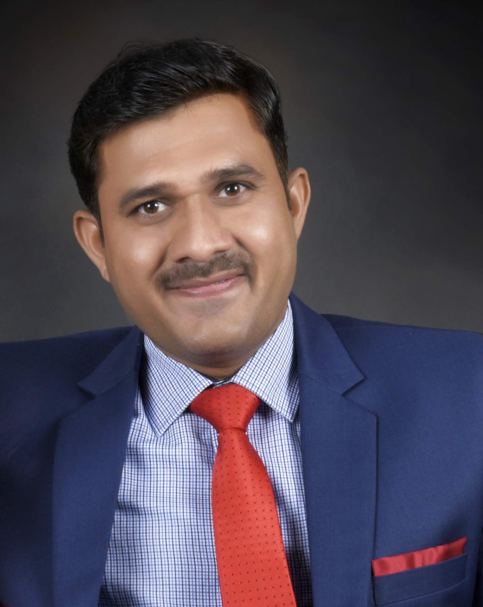

A decade of research spanning three countries, one continuous thread: making vehicular systems provably trustworthy.
Led by Dr. Shrikant Tangade, the autoMoTIVe-X Lab is a world-class research hub dedicated to vehicular cybersecurity. His journey reflects a decade of elite scientific excellence across three of Europe and India's strongest security research communities.
Inria, Lille, France — Researching Security & Privacy in Common Mobility Data Spaces, with a project evaluated at 88/100 by the European Commission's review panel.
Team SERENDIPITYUniversity of Padova, Italy — Working under the mentorship of Prof. Mauro Conti within the SPRITZ Security & Privacy Research Group.
SPRITZ Research GroupAMBIT, Belagavi, India — Currently serving as Professor and a key member of the IEEE VTS Bangalore Chapter, connecting the lab to India's automotive and standards ecosystem.
IEEE VTS BangaloreAt autoMoTIVe-X, we believe cybersecurity in the SDV era has to start below the software stack. We use silicon-sourced entropy and Zero-Knowledge Proofs (ZKP) to build an end-to-end security architecture that is:
Removing persistent keys from vulnerable flash memory, so there's nothing sitting in storage for an attacker to physically extract.
Ensuring data integrity from the Zonal Controller all the way to the Cloud, with no trusted intermediary that can quietly rewrite history.
Preparing the vehicle fleet for tomorrow's cryptographic threats, well before quantum computing makes today's assumptions obsolete.
The SERENDIPITY Team, focused on data-space security and privacy for connected mobility.
The University of Padova, home of the SPRITZ Security & Privacy Research Group.
The global IEEE Vehicular Technology Society standards community.